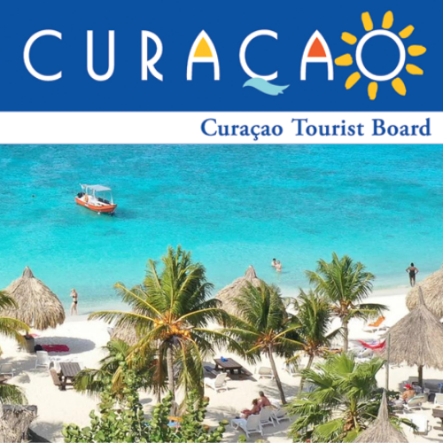

About Us
Curacao Tourist Board is a organization that help tourists plan a trip and meet other tourist while on their vacation.
Our services are based on helping tourist travel to the best locations on Curacao efficiently while also providing hospitality in our beautiful motel at a reasonable price.
We are located at Kokomo beach, Curacao.Stop by and enjoy the beach and some coconut water on us!
Phone: 555-666-7777
E-mail: TouristBoard@hotmail.com